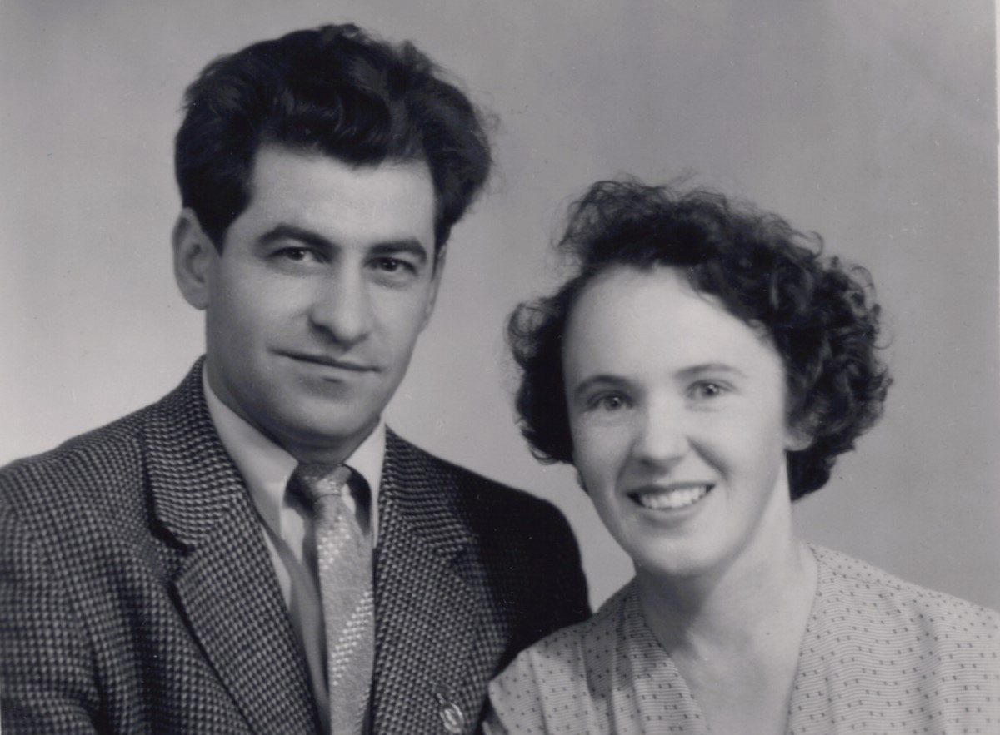
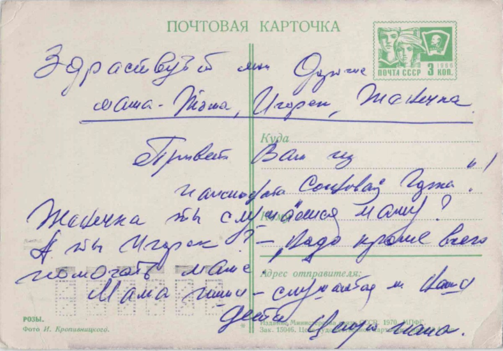

Сербинов Александр Федорович
Родился: 06.12.1927, с. Зеленое (с. Зеленовка)
Умер: 19.01.2017, г. Челябинск
Род: Сербиновы
Продолжительность жизни: 89
Место жительства: г. Челябинск
Основное занятие: Инженер - мостостроитель
Запись о рождении https://www.familysearch.org/ark:/61903/3:1:3Q9M-CS9L-49XC-H?i=810&cat=1405206
родился в с. Зеленовка. В мае 1931 года вместе с родителями раскулачен и в июне 1931 под конвоем года выслан в Челябинскую область, г. Копейск, пос. шахты 205.
После окончания школы в поселке подал документы в военное училище, получил профессию топографа, жил в Питере, потом в Прибалтике. Служил недолго - подхватил туберкулез, демобилизовался из армии, вернулся в Челябинск, пошел работать геодезистом, ну, в общем, всю жизнь в Челябинске и прожил. Тут женился, детей нажил..
Отец: Сербинов Федор Иванович
Мать: Сербинова (Плачкова) Мария Филипповна
Единокровная сестра: Сербинова Надежда Федоровна
Единокровный брат: Сербинов Стефан Федорович
Единокровная сестра: Сербинова Мария Федоровна
Брат: Сербинов Иван Федорович
Брат: Сербинов Степан Федорович
Сестра: Сербинова Елена Федоровна
Брат: Сербинов Дмитрий Федорович
Брат: Сербинов Даниил Федорович
Жена: Сербинова (Кичева) Тамара Павловна
Сын: Сербинов Игорь Александрович
Сын: Сербинов Евгений Александрович
 Семья Сербинова Ивана Федоровича 1873 г.р.: около 1929, с. Зеленое (с. Зеленовка). Рукой Сербинова Александра Федоровича на обороте: Семья Сербинова Ивана Федоровича 1873 г.р.: около 1929, с. Зеленое (с. Зеленовка). Рукой Сербинова Александра Федоровича на обороте:1. Иван Федорович (дедушка) 1870-1932 2. Василий Иванович (дядя) 3. Степанида Ивановна (бабушка) 1870-1932 3. Евдокия (тетя жена В.И.) 5. Мама 1895-1975 29/12/75 6. Надежда Федоровна (сестра) 7. Отец (1895-1965) 28/10/65.  Сербиновы Даниил, Иван и Александр Федоровичи: около 1940, г. Копейск. Сербиновы Даниил, Иван и Александр Федоровичи: около 1940, г. Копейск.  Семья Сербинова Федора Ивановича: 27.12.1940, г. Копейск. Рукой Сербинова Ивана Федоровича на обороте: Семья Сербинова Федора Ивановича: 27.12.1940, г. Копейск. Рукой Сербинова Ивана Федоровича на обороте:Фотография 27/12/40 г. Копейск шахта № 205 Семейная карточка 1. Сербинов Ф.И. 2. Сербинова М.Ф. 3. Сербинов И.Ф. 4. Сербинов Д.Ф. 5. Сербинов А.Ф. 1960-10-09: 09.10.1960, г. Магнитогорск. |
Открытка из пансионата "Сосновая Горка" |
 Сербиновы Александр Федорович и Тамара Павловна: 20.10.2011, г. Челябинск. Координаты: 55°9'27.60"N, 61°24'34.20"E. Сербиновы Александр Федорович и Тамара Павловна: 20.10.2011, г. Челябинск. Координаты: 55°9'27.60"N, 61°24'34.20"E. |